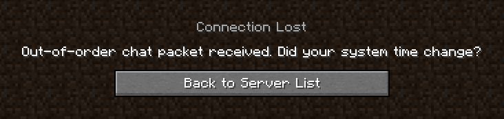
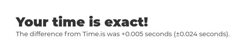
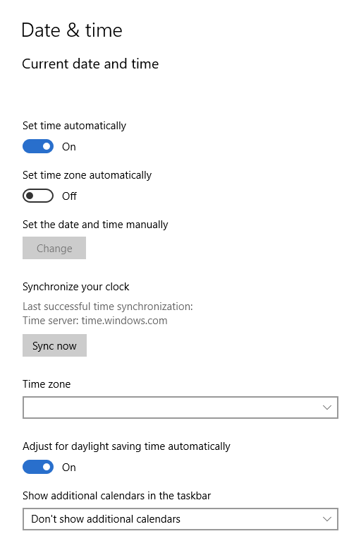
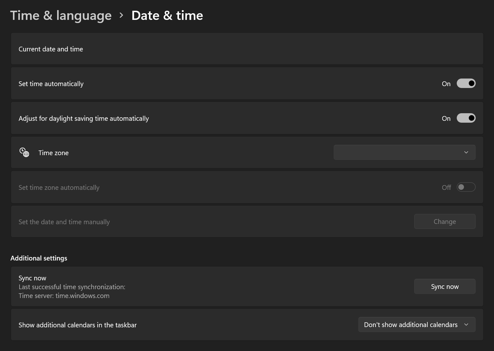

With Minecraft 1.19 onwards Mojang introduced chat message signing, as part of this the timestamp of a message is included and the server verifies that the message was sent within a reasonable time frame, that being not too old, or not "from the future", if a message fails this check then the user is disconnected.
Unfortunately sometimes these disconnects can get a little trigger-happy if your computer's time is out of sync, this happens naturally and computers usually work to keep this in sync, however this can be imperfect and desyncs can and will occur on most systems.

If someone sent you to this page, its probably because you are having this issue, and we're gonna tell you how to fix it, as well as answer some questions.
The best way I have found so far is to use the site time.is, which will perform a check to compare your system time with that of their servers which are kept fairly accurate.

On Windows you can find options for time syncronisation in the system settings. You can find screenshots below of what this menu looks like and where it can be found. But generally it can be found under "Time & Language" > "Date & Time" > "Syncronize your clock".
Windows 10 |
Windows 11 |
|---|---|
|  |  |
On Linux, most distributions have fairly good date time syncronisation out of the box, so you probably won't really have any issues. If you are, then you will have to do your own research as distributions can vary enough that giving universal instructions is difficult. If you are on a more DIY distribution such as Arch Linux, I would recommend using Chrony.
If instructions for your operating system are not listed here, a reminder that Google exists, and you can easily find answers there with a search query like "macos resync date time".
If you have resynced your system time, consider contacting whoever manages the server you play on, the time may be desynced server side causing the same issue. Beyond this, there really isn't much you can do.